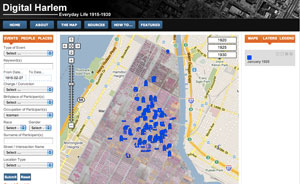
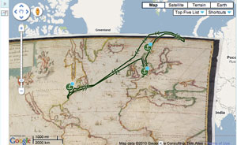

This is an archived copy of History Matters, provided by the Roy Rosenzweig Center for History and New Media. To explore this content in a new interface, visit Who Built America?.

Digital Harlem: Everyday Life, 1915–1930 http://www.acl.arts.usyd.edu.au/harlem/ Created and maintained by Shane White, Stephen Garton, Graham White, and Stephen Robertson at the University of Sydney, Australia. Reviewed May 2010.
Henry Hudson 400: Celebrating the History of Hudson, Amsterdam, and New York http://www.henryhudson400.com/ Created and maintained by the Henry Hudson 400 Foundation. Reviewed May 2010.
When Google released its map application programming interface (API) in the summer of 2005 (followed by its earth API a couple of years later), a small revolution occurred. Anyone with basic programming skills could now integrate Google’s world map and the accompanying satellite imagery into individual Web sites, create and markup maps, and even develop new software using the Google Maps application. Quite suddenly, the world of Geographic Information Systems (GIS)a terrain that had been dominated for decades by significantly more esoteric, desktop applications such as the Economic and Social Research Institute’s ArcMap and ArcGIShad been opened up to the masses of neogeographers on the World Wide Web. Map creation flourished almost overnight as nearly everyone with any sort of geographical data began making mapsof their favorite restaurants, bike paths, and whale-watching spots. Geographical and time information became indispensable metadata fields for a vast array of Web content, prompting the chief Google technologist Michael Jones, while speaking at a conference in May 2007, to amend his company’s mission “to geographically organize the world’s information and make it universally accessible and useful.” The geospatial Web was born as user-generated content gained a robust geographic dimension, local search was yoked to location awareness, and the open source movement facilitated the exponential growth of the geodeveloper community.
But according to Martyn Jessop, the georevolution seemed to have gone unnoticed in the digital humanities, which had focused more on textual analyses in digital environments (“The Inhibition of Geographical Information in Digital Humanities Scholarship,” Literary and Linguistic Computing, November 20, 2007.) While I do not think Jessop is incorrect, I do believe that he leaves out a significant reason for the wariness of humanists to join the georevolution: the fear about scholarly legitimacy and authority that surrounded Web 2.0 applications. The way around this problem, of course, is to lock up the data and prevent the general public from contributing to or tampering with the content on such sites.

Digital Harlem and Henry Hudson 400 are both sophisticated Google Maps projects that present a range of geographical data and temporally encoded data on an interactive mapping platform to allow users to choose and turn on various data layers on maps. They are both examples of innovative geohistorical scholarship that probe the time layers of a specific place by remediating existing datain the form of cartographic mappings, social science datasets related to people and places, and other primary materials gathered from a range of municipal, state, and library archivesand bring them together in new interpretative frameworks. While neither project foregrounds the social or Web 2.0 dimension of neogeography, they do illustrate how digital humanities scholarship that is focused on preserving aspects of cultural heritage has begun to leverage the geospatial Web and the Google Maps and Google Earth APIs in creating compelling spatial visualizations.
Developed by four University of Sydney historians Stephen Garton, Stephen Robertson, Graham White, and Shane White who collaborated with the university’s archaeological computing laboratory, Digital Harlem aims “to visualize and explore the spatial dimensions of everyday life in Harlem during its heyday, 19151930.” To do so, the team created a series of dynamically populated, searchable map layers organized by three metacategories: people, places, and events. Under each of these categories, users can view a range of data on a Google map, accessed by clicking on pinpoints and polygons. These geographical data and time-referenced data drawn from district attorney case files, probation department case files, newspapers, the Works Progress Administration Writers Program collection, and other sources provide fascinating insight into Harlem night life, community events, traffic patterns, criminality, and even the individual life trajectories of residents in the community. The interface also allows for granular searching of the database by street address, block, time span, name, occupation, and numerous other fields. Users can mine and create their own “time slices” of Harlem between 1915 and 1930. Some of the most interesting maps and documents examine the cultural and social impact of traffic accidents, divorce raids, prostitution arrests, and labor patterns in 1920s Harlem.

Henry Hudson 400 is also built on the Google Maps and Google Earth APIs and features a series of georeferenced historical maps particularly a number of rare maps of lower Manhattan and Amsterdam in the seventeenth and eighteenth centuries and several layers that show the routes of Henry Hudson’s voyages, the lives of the first New Yorkers, and a well-rendered set of three-dimensional reconstructions of historical buildings and ships. The site was built to commemorate the four hundredth anniversary of Hudson’s voyage to New York and the river that now bears his name and to establish a digital record of the legacy and influence of the Dutch on the development of the city. Funded by an array of private, institutional, and community partners, the site is the digital face of a foundation dedicated to strengthening the cultural and historical ties between the United States and the Netherlands through an ongoing series of public exhibitions, publications, cultural exchanges, and events. It is also noteworthy that the foundation uses the site to solicit personal stories and family histories of the Hudson, Amsterdam, and New York, although these stories do not yet comprise a data layer or social network on any of the maps.
Unlike Digital Harlem, which allows users to query, sort, and display data in granular layers based on time, place, theme, and numerous other metrics, users of Henry Hudson 400 are limited to clicking maps and objects on and off. To be sure, both sites feature a rich array of historical information and use the Google map as an intuitive base layer for historical navigation; however, Digital Harlem allows a user to test a much wider range of hypotheses through visualizations that result in more complicated kinds of analyses and correlations. Neither site has yet taken advantage of the social, crowd-sourced, or distributed dimension of data creationsomething that might allow users to create their own maps by exporting the data or curate their own arguments and interpretations. Nevertheless, both sites are compelling examples of scholarly research in digital humanities that takes advantage of Google’s Web mapping application to develop platforms for investigating and visualizing aspects of cultural heritage. The beauty of this approach is that the technologies, the functionalities that they allow, and the content will continue to develop as these sites go through further iterations. Perhaps that fact alone renders these sites part of the next generation of digital humanities scholarship, one that embraces the geospatial revolution on the Web.
Todd Presner
University of California, Los Angeles
Los Angeles, California